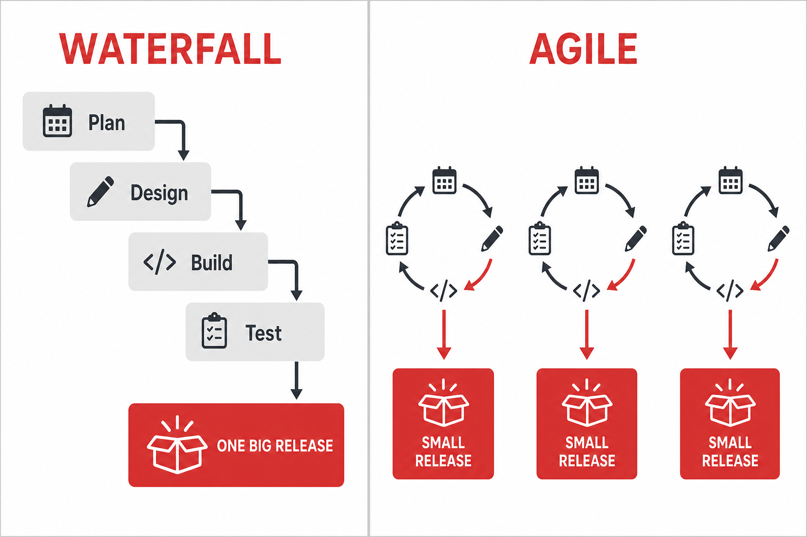
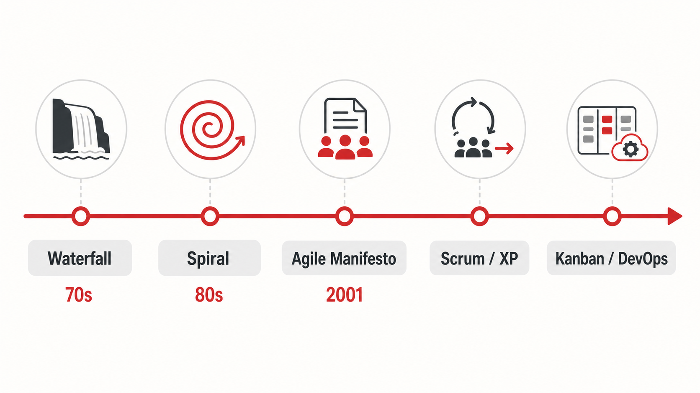

Why software teams stopped planning everything upfront — and what agile actually promises.
Methodology becomes paperwork instead of a response to real failures.
Big upfront plans meet reality and quietly die.
Teams follow ceremonies without knowing why they exist.
Every methodology is a reaction to a failure mode. Know the failure it prevents.
Plan everything, build once, test last.
Build in loops, manage risk (Spiral).
Working software over comprehensive docs.
Sprints, stand-ups, TDD, pair programming.
Flow, WIP limits, continuous delivery.
“Working software over comprehensive documentation” — the manifesto in one line.

Requirements will change — expect it.
Demo working software early and often.
Deploy small changes continuously.
You are already living this history: weekly demos now, CI/CD in unit 120.
AI makes code cheap. That makes feedback loops (demos, tests, deploys) more valuable, not less.

Waterfall → Iterative → Agile → Scrum / XP → Kanban / DevOps.